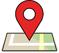

Contact and Submit
Submit a Point of Interest (POI)
What is a POI?
Points of Interest (POIs) are locations that have been augmented as part of the tour. Augmentations include images, video, or audio content associated with each location. These media are then overlayed in the location. We welcome suggestions for specific locations suitable for inclusion on the tour, and we value your participation. Please consider sending us information about your experience with the tour, a POI, or a location you would like to see included.
What Do We Want?
Send us your ideas for locations to augment in Paynes Prairie. We welcome audio, video, and images as well as text descriptions. Send us text and links to multimedia content hosted on platforms like Youtube, Vimeo, Flicker, and SoundCloud. If you have questions about uploading work, please do not hesitate to contact us. You may email the organizers with the files, links, or questions at ecotourapp [at] gmail (dot) com (replace bracketed info with the appropriate symbol) or use the form below.
Contact Form
Forthcoming. For now, use the above email address to get in touch.